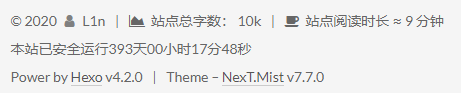
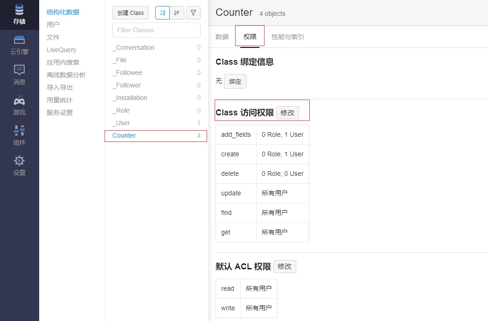

博客搭建完成后，最初的博客雏形一般都比较朴素，功能也有限，所以可以通过优化主题来进行美化博客外观和拓展博客功能。本篇文章主要以可正常访问的Hexo.Mist原型博客为基础，根据自身需求加以优化，而最新版（V7.7）中其实包含很多美化设置，但是默认是关闭状态，同时个性化配置需要修改配置文件等，即使出现一个字母的差错也会导致失效，因此本文对配置文件会具体说明，而目录均是按照我的博客搭建博文中说明的目录结构，可以根据自身目录结构进行转换，博文中展示的图片可能来自参考文章，若参考文章内容与实际存在差异会附上实际图片。
优化主题
我的个人博客是林深时见璐，本文优化的效果可以访问博客进行观看。
阅读全文设置
由于初始博客并没有设置摘要的形式，因此博客首页会展示每篇博文的全文，显得十分冗长，为此设置阅读全文能简化博客首页，且让博文能以简短的摘要进行展示。[1]
设置方法采用的是在博文中选择适当位置进行内容截断，填写以下内容：
<!-- more -->
这样首页便只会展示在截断位置前的内容。
分类板块二级目录显示
在类别模块，往往只显示一种类别，但有时候博客之间归属一大类却各有差异，因此设计二级分类目录，使得类别简洁的同时又能将具体博文区别。因为Hexo原生支持父子分类，在博文撰写的md文件首部categories下原先的类别A下再写一个类别B，即可得到父子类的效果，A为父类，B为子类，示例如下[2]：
|
|
点击侧边栏头像返回首页
在Next V7.7.0版本配置中修改方式与以前版本存在差异，未测试之前版本效果，本人配置方式如下：
1）找到侧边栏配置文件../next/layout/_partials/sidebar/site-overview.swig；
2）找到头像配置位置class="site-author-image"；
3）设置点击头像跳转，需将对应头像配置修改如下：
|
|
评论系统使用utteranc
原先使用的是主题自带的gitalk作为博客评论系统，而更改为utteranc的原因有两个：
1）gitalk存在原始配置泄露及访问授权等问题，utteranc具备细粒度的权限控制，且接受隐私项目授权；
2）二者都是基于GitHub的issue系统进行评论，很好转换。
转换评论系统首先将gitalk在../next/_config.yml中设置为false，将GitHub中授权的应用删除。安装utteranc步骤如下[3]：
1）在GitHub APP中安装utterances，链接为https://github.com/apps/utterances，安装后如图：
 ◎ utterance应用安装
◎ utterance应用安装
2）安装插件，在hexo文件目录下打开git bash，安装如下：
|
|
3）在../next/layout/_third-party/comments/中新建文件utterances.swig，写入以下内容：
{% if theme.utteranc.enable %}
<script src="https://utteranc.es/client.js"
repo="{{ theme.utteranc.repo }}"
issue-term="{{ theme.utteranc.issue_term }}"
theme="{{ theme.utteranc.theme }}"
crossorigin="anonymous"
async>
</script>
{% endif %}
4）在../next/layout/_partials/comments.swig中找到最后一句elseif并在其中的<div></div>后面增添以下内容：
{% elseif theme.utteranc.enable %}
<div class="comments" id="comments">
{% include '../_third-party/comments/utterances.swig' %}
</div>
5）在../next/_config.yml添加下面的配置内容：
|
|
更新完博客配置后，便能看到之前使用gitalk留下的评论，同时也能发表新评论。
更新utteranc评论系统配置说明
1）新版配置简化，上述配置中3）和4）部分可忽略，若忽略配置后未生效可尝试加上；
2）原先设置中pathname设置改为title，避免URL中带有中文字符编码导致评论issue显示中文为编码，修改后issue名称即博客文章标题。
图片设置
- 图片放大查看的功能，这是默认功能，可以选择使用的插件
fancybox或mediumzoom，我使用后者，在../next/_config.yml中搜索mediumzoom，将false改为true。 - 图片标题说明，当前的配置情况下，即使使用下面展示的markdown语法中的图片说明也无法正常显示在博客中，其中
Optional title是图片的title属性，若使用Next主题中的fancybox插件则自动会显示，其他的配置则需要更改Hexo渲染组件。
|
|
修改渲染配置步骤如下：
1）在../hexo/node_modules/marked/lib/marked.js中进行下述修改，其中-表示删除+表示增加：
|
|
2）增加自定义CSS样式，在../source/_data/styles.styl中增加以下内容：
|
|
- 图片居中
在../next/source/css/_schemes/Mist/_posts-expanded.styl中找到.posts-expand中的下列内容[4]：
|
|
将其修改为：
|
|
博文脚注
脚注也可以叫注脚，Hexo自带的默认markdown编辑器渲染效果不支持脚注的显示，因此安装插件进行渲染支持，我使用的是hexo-reference，整体效果更可观，安装如下[5][6]：
|
|
在博客撰写的md文件中使用如下（^和数字之间不需要空格）：
|
|
修改篇尾的标签符号
默认的标签符号是#，可以使用自带的标签图案，修改方式即在../next/_config.yml中将tag_icon更改为true。
 ◎ old_tag
◎ old_tag
 ◎ new_tag
◎ new_tag
修改分割线
原先的默认分割线是虚线，将其修改为实线，在../next/source/css/_common/scaffolding/base.styl中将下属配置删除[7]：
|
|
页脚显示博客运行时间
在博客页脚显示博客运行时间[8]，这个在默认主题配置中并没有，因此需要自己添加，修改配置文件是../next/layout/_partials/footer.swig，在配置文件中找到你想显示在博客页脚的位置，比如我配置在主题版本信息下，显示效果如图：
◎ 博客运行时间显示效果
不同配置位置可以自行尝试修改，具体添加代码如下：
点击查看具体代码
``` swig ```显示博客阅读数量
已经有许多教程，在博客主题配置中也有多种选择，根据网上教程的介绍，busuanzi插件只能在博文显示阅读数，因此我选择部署LeanCloud插件来显示阅读数，但是在部署过程中遇到不少问题，而且没有在任何教程中找到完整的说明，尽管网上也有可行的教程[9]，我还是记录下来。
注册
在LeanCloud官网中进行注册并登录。
应用配置
进入控制台之后，点击创建应用，填写应用名称，计价方案选择开发版，创建成功之后，在对应应用右上角点击齿轮状的设置，如图：
 ◎ LeanCloud应用设置
◎ LeanCloud应用设置
在设置界面，选择存储，选择创建Class，Class名称输入Counter，因为这个类名与Next主题兼容，默认ACL权限设置为无限制即所有用户可读可写。
在设置界面，选择设置，选择应用Keys，将界面显示的AppID和AppKey复制，在主题配置文件修改时需要使用。
在上述的设置选项下选择安全中心，在Web安全域名的填写框中输入博客的完整域名，保证统计数据只在记录的域名中有效。
博客配置
在博客的../next/_config.yml配置文件中，找到leancloud_visitors，设置配置信息如下：
|
|
app_id处填写应用配置时复制的AppID，app_key填写应用配置时复制的AppKey。
安全插件安装及部署
如果上述配置完成后，更新部署博客，能够正常显示阅读数量，后续的内容可以选择跳过。
如果上述配置不能正常显示阅读数量，且存在Counter not initialized! See more at console err msg.的问题，此时在博客页面打开控制台（Chrome下按F12或右键选择检查），点击Console查看是否存在下图显示内容：
 ◎ Count类未初始化问题
◎ Count类未初始化问题
这是因为LeanCloud插件存在安全问题，需要安装另一个插件hexo-leancloud-counter-security进行完善。
首先在../next/_config.yml主题配置文件中的leancloud_visitors找到security选项，将其改为true，同时确认同一配置文件下的valine部分的enable和visitor是false，因为这两者会产生冲突，如果使用valine作为评论系统，可以参照网上教程进行冲突解决。
然后在博客根目录下打开git bash或CMD，安装插件：
|
|
由于插件存在依赖性，出现Error: Cannot find module 'babel-runtime/regenerator'错误时需要再安装模块babel-runtime：
|
|
安装完成之后，注册用户，其中用户名和密码替换为你要设置的用户名和密码内容（不需要和LeanCloud的登陆名和登陆密码一样）：
|
|
之后修改博客配置文件../hexo/_config.yml，添加以下内容（所有选项都必须填写，此处的username和password即刚刚注册的用户名和密码，网上有教程认为此处空白可等部署时输入，但我部署时会因为配置缺少导致出错，所以建议配置中直接写入），否则部署时会报错TypeError: Cannot read property ‘enable_sync’ of undefined：
|
|
之后在同一配置文件下的deploy部分，做以下修改：
|
|
由于搭建博客时已经部署到GitHub，要同时部署git和leancloud需要在配置文件中写清楚，其中git部分的username是对应博客的GitHub用户名，可参照我的博客搭建个人博客(hexo+next+github）中的说明。
完成插件安装和配置修改后，到LeanCloud的应用中查看存储下的_User项，是否已经添加刚刚注册的用户，如图：
 ◎ LeanCloud用户查看
◎ LeanCloud用户查看
存在用户后，查看Counter项，对表权限进行修改，点击Counter，选择权限，点击修改，分别修改add_fields、create和delete。
◎ Counter权限修改
add_fields和create两项的修改步骤一致：
1）选择指定用户
2）输入已注册的用户名，添加
 ◎ 添加用户
◎ 添加用户
3）查看已添加用户正常显示
 ◎ 用户添加成功效果
◎ 用户添加成功效果
对于delete项，只保留上述第一个步骤即可，不需要添加用户。
如果希望保护访问数据不被篡改，可以选择云引擎，选择部署，选择在线编辑，点击创建函数，选项依次选择Hook、beforeUpdate和Counter，在函数中添加以下内容：
|
|
 ◎ 云引擎设置内容
◎ 云引擎设置内容
保存上述设置之后，可看到添加的函数，点击部署，等待部署完成即可。
 ◎ 部署完成日志
◎ 部署完成日志
修改lean-analytics.swig配置
如果上述配置完成后正常显示阅读数可跳过这部分，若出现阅读数不正常且显示为0，可参照此部分[10]，原因可能是LeanCloud接口出现变化。对..\next\layout_third-party\statistics\lean-analytics.swig做以下修改：
|
|
设置中文缩进
中文撰写时习惯首行缩进，但是直接输入空格不能奏效，网上有教程可以设置自动缩进2 em，但是这样设置后还需要对不需要缩进的位置进行单独设置，同时自动缩进可能对排版不友好的文章不友好，可能在不该缩进的地方都给缩进了，所以我选择在写博文时手动在需要缩进的地方进行设置，即手动输入空格，此处将习惯的space即空格键输入换成 或 即可[11]，输入两个即缩进两格，注意分号;不要漏掉，其他空格替换符如下：
|
|
静态代码压缩
为了让博客源码显得紧凑，也为了让网站加载速度变快，使用gulp对博客源码进行压缩。[12]
1）安装gulp插件
安装gulp记得需要在全局环境下进行安装，不要只在博客根目录下的环境进行安装，否则会导致gulp无法正常执行。
|
|
2）安装功能模块
以下功能模块会在后续配置中使用，可以根据个人实际需要进行选择安装，一般建议html和css相关源码进行压缩，所以对应模块建议安装。
|
|
3）gulpfile.js配置
在博客根目录../hexo新建文件gulpfile.js，添加以下配置信息，可根据自身需要进行修改：
点击查看具体代码
``` javascript var gulp = require("gulp"); var debug = require("gulp-debug"); var cleancss = require("gulp-clean-css"); //css压缩组件 var uglify = require("gulp-uglify"); //js压缩组件 var htmlmin = require("gulp-htmlmin"); //html压缩组件 var htmlclean = require("gulp-htmlclean"); //html清理组件 var imagemin = require("gulp-imagemin"); //图片压缩组件 var changed = require("gulp-changed"); //文件更改校验组件 var gulpif = require("gulp-if"); //任务 帮助调用组件 var plumber = require("gulp-plumber"); //容错组件（发生错误不跳出任务，并报出错误内容） var isScriptAll = true; //是否处理所有文件，(true|处理所有文件)(false|只处理有更改的文件) var isDebug = true; //是否调试显示 编译通过的文件 var gulpBabel = require("gulp-babel"); var es2015Preset = require("babel-preset-es2015"); var del = require("del"); var Hexo = require("hexo"); var hexo = new Hexo(process.cwd(), {}); // 初始化一个hexo对象// 清除public文件夹
gulp.task("clean", function() {
return del(["public/**/*"]);
});
// 下面几个跟hexo有关的操作，主要通过hexo.call()去执行，注意return
// 创建静态页面 （等同 hexo generate）
gulp.task("generate", function() {
return hexo.init().then(function() {
return hexo
.call("generate", {
watch: false
})
.then(function() {
return hexo.exit();
})
.catch(function(err) {
return hexo.exit(err);
});
});
});
// 启动Hexo服务器
gulp.task("server", function() {
return hexo
.init()
.then(function() {
return hexo.call("server", {});
})
.catch(function(err) {
console.log(err);
});
});
// 部署到服务器
gulp.task("deploy", function() {
return hexo.init().then(function() {
return hexo
.call("deploy", {
watch: false
})
.then(function() {
return hexo.exit();
})
.catch(function(err) {
return hexo.exit(err);
});
});
});
// 压缩public目录下的js文件
gulp.task("compressJs", function() {
return gulp
.src(["./public//*.js", "!./public/libs/"]) //排除的js
.pipe(gulpif(!isScriptAll, changed("./public")))
.pipe(gulpif(isDebug, debug({ title: "Compress JS:" })))
.pipe(plumber())
.pipe(
gulpBabel({
presets: [es2015Preset] // es5检查机制
})
)
.pipe(uglify()) //调用压缩组件方法uglify(),对合并的文件进行压缩
.pipe(gulp.dest("./public")); //输出到目标目录
});
// 压缩public目录下的css文件
gulp.task("compressCss", function() {
var option = {
rebase: false,
//advanced: true, //类型：Boolean 默认：true [是否开启高级优化（合并选择器等）]
compatibility: "ie7" //保留ie7及以下兼容写法 类型：String 默认：''or'' [启用兼容模式； 'ie7'：IE7兼容模式，'ie8'：IE8兼容模式，''：IE9+兼容模式]
//keepBreaks: true, //类型：Boolean 默认：false [是否保留换行]
//keepSpecialComments: '' //保留所有特殊前缀 当你用autoprefixer生成的浏览器前缀，如果不加这个参数，有可能将会删除你的部分前缀
};
return gulp
.src(["./public/**/.css", "!./public/**/*.min.css"]) //排除的css
.pipe(gulpif(!isScriptAll, changed("./public")))
.pipe(gulpif(isDebug, debug({ title: "Compress CSS:" })))
.pipe(plumber())
.pipe(cleancss(option))
.pipe(gulp.dest("./public"));
});
// 压缩public目录下的html文件
gulp.task("compressHtml", function() {
var cleanOptions = {
protect: /<!--%fooTemplate\b.?%-->/g, //忽略处理
unprotect: /<script [^>]\btype="text/x-handlebars-template"[\s\S]+?</script>/gi //特殊处理
};
var minOption = {
collapseWhitespace: true, //压缩HTML
collapseBooleanAttributes: true, //省略布尔属性的值 ==>
removeEmptyAttributes: true, //删除所有空格作属性值 ==>
removeScriptTypeAttributes: true, //删除